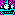
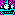

Dungeon Explorer (DOS, 1990)
Unused Content
Things not present in the Dungeon of the Beast adventure.
"A metal ship"
 

Metal ships let you safely travel across lava. They are entered and exited like the wooden ship and the flying ship.


"An odd design"

This is a floor tile (tile 56) which teleports you (one-way) to another room. Stepping on it, the game exlaims "You are teleported !"
Each room specifies the destination of the teleport with the OddDesignRoom byte near the end of the RoomData record.
"A small city" and "a building"


These are tiles which the player can step on and (E)nter. Doing so will teleport the player to a room based off the first byte in the RoomData.
This is glitchy. The player is not teleported anywhere inside the room so trying to move will have bad results. This can be undone by using the (!) command to go back to the start room.
"A funny looking chest"
This is like the chest tile except it doesn't have a transparency and trying to interact yields "The chest was an illusion !" (at which point the chest vanishes).
"A soft section of wall"

Looks like a normal wall but can be attacked. Doing so turns it into "a soft piece of wall".
"A old skeleton"
A searchable tile, like the old body and old bones.
"A movable glass block"

A pushable object that is indistinguishable from the normal floor tile. It actually uses that specific floor tile beacuse moving it on top of a variant (e.g. with vegetation) causes a change, so it's not totally invisibie. Otherwise works like the normal movable block.
"A hollow obelisk"
A solid block that disappears when attacked. Otherwise, does nothing?
"A stone marker"

Can be stepped on. Otherwise, does nothing?